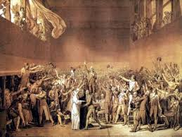

З 1806 року Бетховен був частим відвідувачем посольських вечорів, виступав у салоні Розумовського, знайомився з його бібліотекою, яка, зокрема, містила видання українських народних пісень.
Андрій Розумовський замовив Бетховену три квартети. У першому квартеті композитор використав мелодію української народної пісні «Ой надворі метелиця», в другому і третьому — варіації на тему пісні «Од Києва до Лубен»